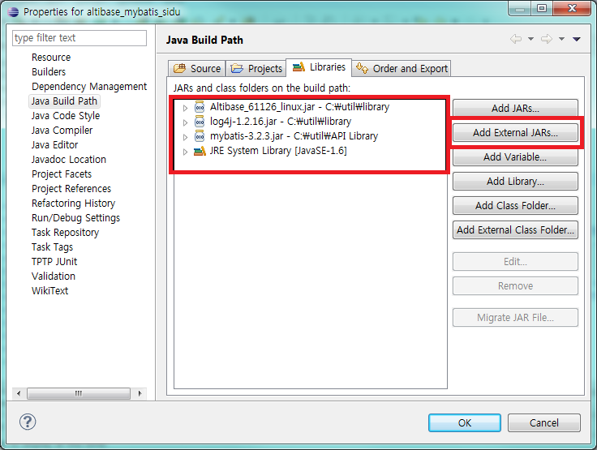

Spring에서 ALTIBASE에 연동할 경우 고려해야 할 사항에 대해 설명한다.
LOB 데이터 처리
iBatis에서는 LOB을 처리하기 위해서는 Mapper 파일에 parameter와 result에 대한 정보를 setting하는 부분에 반드시 jdbcType을 CLOB/BLOB이라고 명시를 해줘야 하며 parameterMap을 이용하여 처리 하였지만, Mybatis에서는 parameterMap이 deprecated 되었기 때문에 쿼리의 binding하는 컬럼에 jdbcType을 직접 명시 한다. 명시하지 않을 경우 LOB 데이터로 인식하지 않아 에러를 발생 하게 된다.
다음은 CLOB 타입의 데이터에 대한 parameterMap과 resultMap을 지정하여 setting하고 있는 예제이다.
예) altibase_mybatis_lob의 LobMapper.xml(Mapper) 파일
<mapper namespace="com.altibase.psy.mapper.LobMapper">
<!-- LOB select, insert, update, delete Test - 2013/11/05 -->
<select id="selectBlobData" parameterType="Integer" resultType="LobVo">
SELECT user_no as userNo, user_name as userName, blob_data as blobData, clob_data as clobData, reg_date as regDate
FROM test_blob
WHERE user_no = #{userNo}
</select>
<select id="selectAllBlobData" resultType="LobVo">
SELECT user_no as userNo, user_name as userName, blob_data as blobData, clob_data as clobData, reg_date as regDate
FROM test_blob
</select>
<insert id="insertBlobData" parameterType="LobVo">
insert into test_blob(user_no, user_name, blob_data, clob_data, reg_date)
values(#{userNo}, #{userName}, #{blobData,jdbcType=BLOB}, #{clobData,jdbcType=CLOB}, #{regDate})
</insert>
<update id="updateBlobData" parameterType="LobVo">
update test_blob set
user_name = #{userName},
blob_data = #{blobData,jdbcType=BLOB},
clob_data = #{clobData,jdbcType=CLOB},
reg_date = #{regDate}
where user_no = #{userNo}
</update>
...
</mapper>
또한 LOB 처리 시 반드시 주의해야 할 사항은 ALTIBASE에서 LOB 데이터를 처리하기 위해서는 반드시 autocommit 모드를 false로 바꾼 후 트랜잭션을 관리해줘야 한다는 것이다. iBATIS 연동 시 SqlMapConfig 파일의 <transactionManager>에 dataSource를 설정할 경우에는 내부적으로 setAutoCommit(false); 메소드를 호출하여 autocommit 모드를 false로 바꿔주기 때문에 LOB 처리 시 따로 고려할 사항은 없으나 MyBatis에서는 default가 true이기 때문에 Session을 얻어올 때 명시해 주어야 한다.
만약 autocommit 모드를 false로 변경해주지 않으면, “java.sql.SQLException: 0:LobLocator can not span the transaction 101858625.” 과 같은 에러가 발생한다.
그리고 LOB 데이터를 입력 시에도 “java.sql.SQLException: 0:LobLocator can not span the transaction 101858625.” 에러가 발생하게 된다.
다음의 예제는 MyBatis에서 Lob데이터를 처리하는 Sample의 일부이며 전체 소스는 부록에 첨부 하였다.
예) altibase_mybatis_lob의 LobMapper.xml 파일
<?xml version="1.0" encoding="UTF-8"?>
<!DOCTYPE mapper PUBLIC "-//mybatis.org//DTD Mapper 3.0//EN"
"http://mybatis.org/dtd/mybatis-3-mapper.dtd">
<mapper namespace="com.altibase.psy.mapper.LobMapper">
<!-- LOB select, insert, update, delete Test - 2013/11/05 -->
<select id="selectBlobData" parameterType="Integer" resultType="LobVo">
SELECT user_no as userNo, user_name as userName, blob_data as blobData, clob_data as clobData, reg_date as regDate
FROM test_blob
WHERE user_no = #{userNo}
</select>
<select id="selectAllBlobData" resultType="LobVo">
SELECT user_no as userNo, user_name as userName, blob_data as blobData, clob_data as clobData, reg_date as regDate
FROM test_blob
</select>
<insert id="insertBlobData" parameterType="LobVo">
insert into test_blob(user_no, user_name, blob_data, clob_data, reg_date)
values(#{userNo}, #{userName}, #{blobData,jdbcType=BLOB}, #{clobData,jdbcType=CLOB}, #{regDate})
</insert>
<update id="updateBlobData" parameterType="LobVo">
update test_blob set
user_name = #{userName},
blob_data = #{blobData,jdbcType=BLOB},
clob_data = #{clobData,jdbcType=CLOB},
reg_date = #{regDate}
where user_no = #{userNo}
</update>
<delete id="deleteBlobData" parameterType="Integer">
delete from test_blob
where user_no = #{userNo}
</delete>
</mapper>
위의 altibase_mybatis_lob 프로젝트를 실행하기 위해서는 Altibase.jar, mybatis-3.2.8.jar 파일이 필요 하다.

Insert시 insert query가 중복되어 보내지는 현상
15:15:55.076 [main] [main] [ERROR] - 2. Connection.prepareStatement(insert into TB_DB_CONFIGSET_LEVEL(DB_TYPE_CODE, LEVEL_CODE, LEVEL_NAME
)
values (?, ?, ?
), 1) insert into TB_DB_CONFIGSET_LEVEL(DB_TYPE_CODE, LEVEL_CODE, LEVEL_NAME
)
values (?, ?, ?
)
문제가 나오는 현상 :
- myBatis 설정 xml 내에서 'useGeneratedKeys' 설정을 true로 하면 위의 문제점 발생
- 위 설정은 아래와 같이 정의되어 있음 (http://mybatis.github.io/mybatis-3/ko/sqlmap-xml.html)
- 데이터베이스에서 내부적으로 생성한 키를 받는 JDBC getGeneratedKeys 메서드를 사용하도록 설정한다.
- default value : 'false'
- 이에 해당 설정을 false로 변경 후 발생하지 않음
- 기 설정은 Oracle과 informix 내에서는 오류가 발생하지 않음
{kind=link}